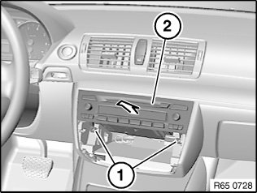
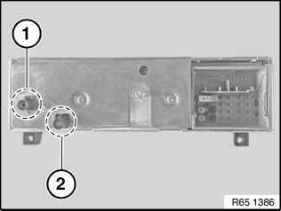

65 11 080 Removing and Installing/Replacing Radio
65 11 080 Removing And Installing/Replacing Radio

NOTE: Comply with notes and instructions on handling optical fibres.

Necessary preliminary tasks:
- Clamp off battery negative lead
- Remove control panel for heating and A/C system

Release screws (1).
Pull back radio (2) slightly.
Disconnect associated plug connections and remove radio (2).
Installation:
Make sure the rear guide pin of the radio (2) is correctly seated in the associated mounting.

US version only:
If there is a violet aerial connection (1) as well as the black aerial connection (2), additional tasks are required when replacing the radio.
Read and observe document Replacing satellite tuner.

Replacement:
Carry out vehicle programming/encoding.